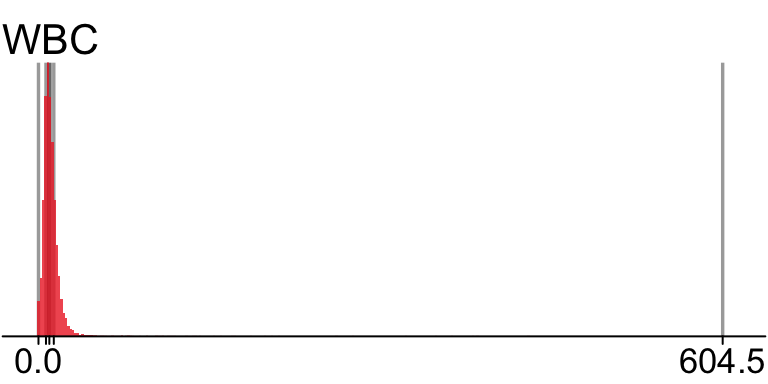
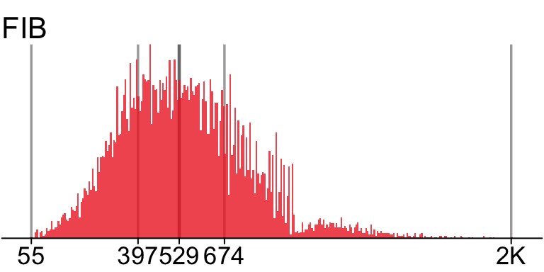
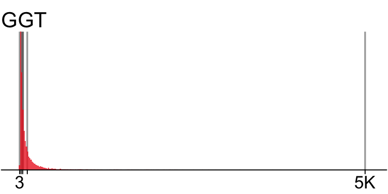
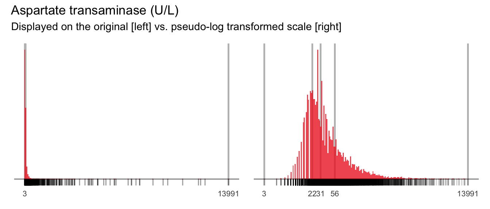
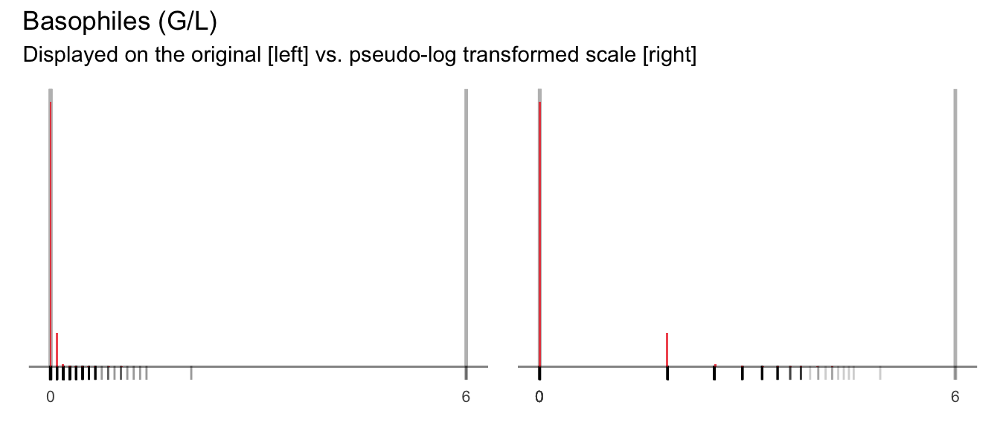
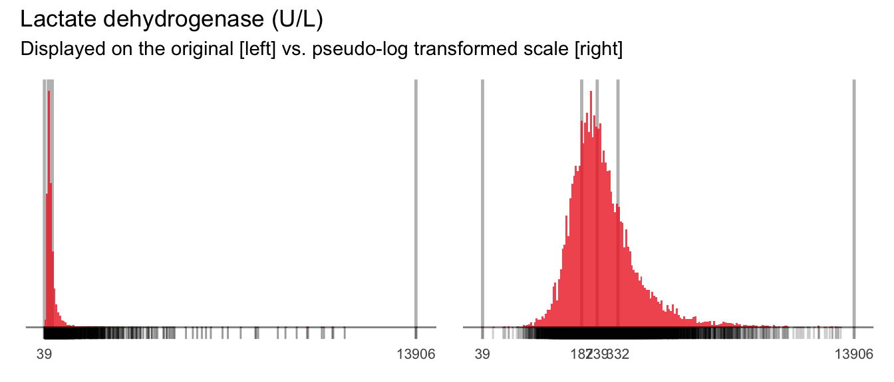
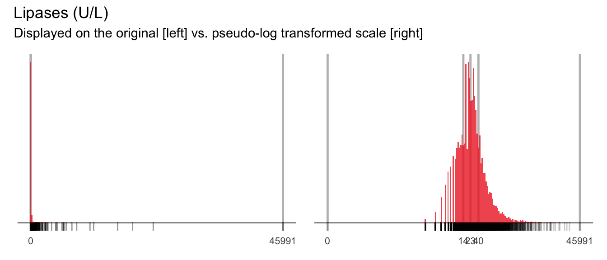
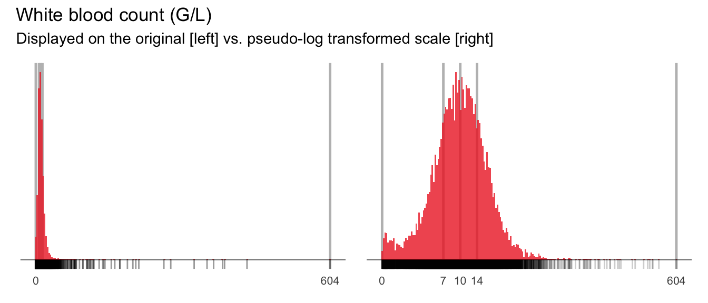

| Category | Count | Proportion |
|---|---|---|
| Age group | ||
| [16, 50] | 5365 | 0.37 |
| (65, 101] | 5076 | 0.35 |
| (50, 65] | 4250 | 0.29 |
| Sex | ||
| male | 8536 | 0.58 |
| female | 6155 | 0.42 |
| Presence of bacteremia | ||
| no | 13511 | 0.92 |
| yes | 1180 | 0.08 |
5 Univariate distribution checks
This section reports a series of univariate summary checks of the bacteremia dataset.
5.1 U1: Categorical variables
Age group, sex and bacteremia status are described by frequencies and proportions in each category.
Also plot the categories as simple bar charts.
5.2 Continuous variables
5.2.1 U2: Univariate distributions of continuous variables
5.2.1.1 U2: Structural variables
The only structural continuous variable is AGE. This variable is also a key predictor and reported in the following section (see below).
5.2.1.2 U2: Key predictors
Distribution of key predictors. Lines indicate the 5-number summary including reported numerical values (where possible).
The remaining predictors are reported in the appendix Section E.1.1.



5.2.1.3 U2: Predictors of medium importance




5.2.2 Numerical summaries
5.2.2.1 Key predictors
key_predictors
6 Variables 14691 Observations
6 Variables 14691 Observations
PLT: Parameter analysis value (Numeric)
![image](data:image/png;base64,
iVBORw0KGgoAAAANSUhEUgAAAJcAAAANCAYAAACkYvxcAAAEDmlDQ1BrQ0dDb2xvclNwYWNlR2VuZXJpY1JHQgAAOI2NVV1oHFUUPpu5syskzoPUpqaSDv41lLRsUtGE2uj+ZbNt3CyTbLRBkMns3Z1pJjPj/KRpKT4UQRDBqOCT4P9bwSchaqvtiy2itFCiBIMo+ND6R6HSFwnruTOzu5O4a73L3PnmnO9+595z7t4LkLgsW5beJQIsGq4t5dPis8fmxMQ6dMF90A190C0rjpUqlSYBG+PCv9rt7yDG3tf2t/f/Z+uuUEcBiN2F2Kw4yiLiZQD+FcWyXYAEQfvICddi+AnEO2ycIOISw7UAVxieD/Cyz5mRMohfRSwoqoz+xNuIB+cj9loEB3Pw2448NaitKSLLRck2q5pOI9O9g/t/tkXda8Tbg0+PszB9FN8DuPaXKnKW4YcQn1Xk3HSIry5ps8UQ/2W5aQnxIwBdu7yFcgrxPsRjVXu8HOh0qao30cArp9SZZxDfg3h1wTzKxu5E/LUxX5wKdX5SnAzmDx4A4OIqLbB69yMesE1pKojLjVdoNsfyiPi45hZmAn3uLWdpOtfQOaVmikEs7ovj8hFWpz7EV6mel0L9Xy23FMYlPYZenAx0yDB1/PX6dledmQjikjkXCxqMJS9WtfFCyH9XtSekEF+2dH+P4tzITduTygGfv58a5VCTH5PtXD7EFZiNyUDBhHnsFTBgE0SQIA9pfFtgo6cKGuhooeilaKH41eDs38Ip+f4At1Rq/sjr6NEwQqb/I/DQqsLvaFUjvAx+eWirddAJZnAj1DFJL0mSg/gcIpPkMBkhoyCSJ8lTZIxk0TpKDjXHliJzZPO50dR5ASNSnzeLvIvod0HG/mdkmOC0z8VKnzcQ2M/Yz2vKldduXjp9bleLu0ZWn7vWc+l0JGcaai10yNrUnXLP/8Jf59ewX+c3Wgz+B34Df+vbVrc16zTMVgp9um9bxEfzPU5kPqUtVWxhs6OiWTVW+gIfywB9uXi7CGcGW/zk98k/kmvJ95IfJn/j3uQ+4c5zn3Kfcd+AyF3gLnJfcl9xH3OfR2rUee80a+6vo7EK5mmXUdyfQlrYLTwoZIU9wsPCZEtP6BWGhAlhL3p2N6sTjRdduwbHsG9kq32sgBepc+xurLPW4T9URpYGJ3ym4+8zA05u44QjST8ZIoVtu3qE7fWmdn5LPdqvgcZz8Ww8BWJ8X3w0PhQ/wnCDGd+LvlHs8dRy6bLLDuKMaZ20tZrqisPJ5ONiCq8yKhYM5cCgKOu66Lsc0aYOtZdo5QCwezI4wm9J/v0X23mlZXOfBjj8Jzv3WrY5D+CsA9D7aMs2gGfjve8ArD6mePZSeCfEYt8CONWDw8FXTxrPqx/r9Vt4biXeANh8vV7/+/16ffMD1N8AuKD/A/8leAvFY9bLAAAAOGVYSWZNTQAqAAAACAABh2kABAAAAAEAAAAaAAAAAAACoAIABAAAAAEAAACXoAMABAAAAAEAAAANAAAAABXzt1gAAAJxSURBVFgJ7Vk9aypBFD2rBk1iGgMa8gMCacQmKEGFlKJgYcBKJCAIahewEayCZQpBLAT/gh+lH40IijZaKFZiIVgJJqAgKsa7kPBMdolr8l7Ivh0YcWfO3PEez96ZucOMRqM1BJb1eg2v14tms4nFYoHpdAq9Xo9MJoOjoyOB1iS4aBnYCEVQmUwm67u7uzXDMCTKrfrw8CDIlgQWNwMMuSfkzbHZbCiVSlgul5zDbm5uMJ/PUa1WsREgJ0Zq/D8YECSufD4Pj8eD5+fnT9kZj8fQaDSf4iSAeBmQ7eoaCcvpdO4kLLJpt9vZCLarfQknPgZ2jlxGoxGNRkMQAyaTCbVaTdAYCSweBhTtdpvXm6enJwwGA/T7fbRaLV4cX0e9XodOp0M0GoXZbOaDSe0iZYA3chUKBWSzWSSTyS+7TgLrdDo4PT39si3JwO9hgFNclL+iU99sNoPAwySv5wcHB9BqtSiXy7i4uJBOkrxMiafjg7h8Ph/S6fS3ieo9VZSeoAi2Sd5CoVC875aeRcTAlrgeHx9xf3//T9wjYR0fH8PtdkMul7OnS4vFArVajdVqBYp0UvndDGyJ6/LyEr1e70c9ItFRpSVUpVLB5XLBYDDg7OwM19fXb8lbWq4pkXtycsJeQUli/NG/jXNy5s+7xfPz87+2HHLO/g2NtMy+3xe+tslkMhweHkKpVLIz0R6SCj2TeCORCIrFIq6urtgIGgwGUalUEAqF4Pf7WSx9DIdDhMNhxONxttI96u3t7Vs/1xfCW61WOByOD93dbhexWAypVIr9fR8AezYkEgl2LxsIBPa0sP8w2kvncjmWn1crL+B3ICTzYcp/AAAAAElFTkSuQmCC)
| n | missing | distinct | Info | Mean | Gmd | .05 | .10 | .25 | .50 | .75 | .90 | .95 |
|---|---|---|---|---|---|---|---|---|---|---|---|---|
| 14649 | 42 | 718 | 1 | 220 | 130.1 | 50 | 81 | 140 | 204 | 277 | 369 | 445 |
CREA: Parameter analysis value (Numeric)
![image](data:image/png;base64,
iVBORw0KGgoAAAANSUhEUgAAAJcAAAANCAYAAACkYvxcAAAEDmlDQ1BrQ0dDb2xvclNwYWNlR2VuZXJpY1JHQgAAOI2NVV1oHFUUPpu5syskzoPUpqaSDv41lLRsUtGE2uj+ZbNt3CyTbLRBkMns3Z1pJjPj/KRpKT4UQRDBqOCT4P9bwSchaqvtiy2itFCiBIMo+ND6R6HSFwnruTOzu5O4a73L3PnmnO9+595z7t4LkLgsW5beJQIsGq4t5dPis8fmxMQ6dMF90A190C0rjpUqlSYBG+PCv9rt7yDG3tf2t/f/Z+uuUEcBiN2F2Kw4yiLiZQD+FcWyXYAEQfvICddi+AnEO2ycIOISw7UAVxieD/Cyz5mRMohfRSwoqoz+xNuIB+cj9loEB3Pw2448NaitKSLLRck2q5pOI9O9g/t/tkXda8Tbg0+PszB9FN8DuPaXKnKW4YcQn1Xk3HSIry5ps8UQ/2W5aQnxIwBdu7yFcgrxPsRjVXu8HOh0qao30cArp9SZZxDfg3h1wTzKxu5E/LUxX5wKdX5SnAzmDx4A4OIqLbB69yMesE1pKojLjVdoNsfyiPi45hZmAn3uLWdpOtfQOaVmikEs7ovj8hFWpz7EV6mel0L9Xy23FMYlPYZenAx0yDB1/PX6dledmQjikjkXCxqMJS9WtfFCyH9XtSekEF+2dH+P4tzITduTygGfv58a5VCTH5PtXD7EFZiNyUDBhHnsFTBgE0SQIA9pfFtgo6cKGuhooeilaKH41eDs38Ip+f4At1Rq/sjr6NEwQqb/I/DQqsLvaFUjvAx+eWirddAJZnAj1DFJL0mSg/gcIpPkMBkhoyCSJ8lTZIxk0TpKDjXHliJzZPO50dR5ASNSnzeLvIvod0HG/mdkmOC0z8VKnzcQ2M/Yz2vKldduXjp9bleLu0ZWn7vWc+l0JGcaai10yNrUnXLP/8Jf59ewX+c3Wgz+B34Df+vbVrc16zTMVgp9um9bxEfzPU5kPqUtVWxhs6OiWTVW+gIfywB9uXi7CGcGW/zk98k/kmvJ95IfJn/j3uQ+4c5zn3Kfcd+AyF3gLnJfcl9xH3OfR2rUee80a+6vo7EK5mmXUdyfQlrYLTwoZIU9wsPCZEtP6BWGhAlhL3p2N6sTjRdduwbHsG9kq32sgBepc+xurLPW4T9URpYGJ3ym4+8zA05u44QjST8ZIoVtu3qE7fWmdn5LPdqvgcZz8Ww8BWJ8X3w0PhQ/wnCDGd+LvlHs8dRy6bLLDuKMaZ20tZrqisPJ5ONiCq8yKhYM5cCgKOu66Lsc0aYOtZdo5QCwezI4wm9J/v0X23mlZXOfBjj8Jzv3WrY5D+CsA9D7aMs2gGfjve8ArD6mePZSeCfEYt8CONWDw8FXTxrPqx/r9Vt4biXeANh8vV7/+/16ffMD1N8AuKD/A/8leAvFY9bLAAAAOGVYSWZNTQAqAAAACAABh2kABAAAAAEAAAAaAAAAAAACoAIABAAAAAEAAACXoAMABAAAAAEAAAANAAAAABXzt1gAAAJQSURBVFgJ7VlLy6lRFF7uKUoSYmBmQplIKcXAhKmBgfILTPwIDKTID6DMGchEuQyVUiQTl4mBXHIppFy+861d3vDu95xvcs7gtHdpr/WsZ9k87fey1xItFosvoIz1eg1erxdkMhn0ej2QSCQUFoOYAsIKSI1GIzWay+Vgt9uRWKVSgVgsRuUxkCkgpIBYKHA8HrlQuVzmbGYwBX6qgOjre9DIJpMJvh+ZJKTX62G5XNJoDGMKCCogeOe6Xq9c0mq1gtlsxvnMYAr8RAHq5tpsNrDdbt/yi8Xim88cpsCfFJD2+30eZzwew+PxeMPxpT4UCr1hzGEK/E4BqcPh4MWHwyEPm0wmYDabQafT8WIMYArQFKA+FlutFo97uVwgEonwcAYwBYQUoG6uZrNJ5dfrdYhGo9QYA5kCnwrwNhfWt+bz+SeP80ulEvj9fuh0OnA6nTicGUyBTwV4da54PA7ZbPaTR/WxJaTRaACr/E6nE9xuN7hcLsAa2eFwAIPBACqVirWOqOr9/6Dotbfo8XhgOp3+s38tEokAa7hisZjMz4UR/xzIe+I4P3NxxpOtXC4n33G/30nqk/+sEeMa+FEqlWCz2WAwGMDtdiM5CoWC9FBxRo5UKiUFZLVaTWy8iPb7PdjtdpKDBWWtVgv5fJ60xdAejUbg8/kgnU5DIBAgNpZ0wuEwnM9naDQakEqlyG/D0zjawWCQ5GH/1mq1Cp7Gu90uFAoFsFgsUKvVyIWMa2HnJJFIkIPWq174+tJutyGZTL7Cf9XG9arVKmQyGW6dX0Px1Ir5GxRmAAAAAElFTkSuQmCC)
| n | missing | distinct | Info | Mean | Gmd | .05 | .10 | .25 | .50 | .75 | .90 | .95 |
|---|---|---|---|---|---|---|---|---|---|---|---|---|
| 14532 | 159 | 674 | 1 | 1.329 | 0.8518 | 0.620 | 0.690 | 0.810 | 1.000 | 1.350 | 2.160 | 3.144 |
BUN: Parameter analysis value (Numeric)
![image](data:image/png;base64,
iVBORw0KGgoAAAANSUhEUgAAAJcAAAANCAYAAACkYvxcAAAEDmlDQ1BrQ0dDb2xvclNwYWNlR2VuZXJpY1JHQgAAOI2NVV1oHFUUPpu5syskzoPUpqaSDv41lLRsUtGE2uj+ZbNt3CyTbLRBkMns3Z1pJjPj/KRpKT4UQRDBqOCT4P9bwSchaqvtiy2itFCiBIMo+ND6R6HSFwnruTOzu5O4a73L3PnmnO9+595z7t4LkLgsW5beJQIsGq4t5dPis8fmxMQ6dMF90A190C0rjpUqlSYBG+PCv9rt7yDG3tf2t/f/Z+uuUEcBiN2F2Kw4yiLiZQD+FcWyXYAEQfvICddi+AnEO2ycIOISw7UAVxieD/Cyz5mRMohfRSwoqoz+xNuIB+cj9loEB3Pw2448NaitKSLLRck2q5pOI9O9g/t/tkXda8Tbg0+PszB9FN8DuPaXKnKW4YcQn1Xk3HSIry5ps8UQ/2W5aQnxIwBdu7yFcgrxPsRjVXu8HOh0qao30cArp9SZZxDfg3h1wTzKxu5E/LUxX5wKdX5SnAzmDx4A4OIqLbB69yMesE1pKojLjVdoNsfyiPi45hZmAn3uLWdpOtfQOaVmikEs7ovj8hFWpz7EV6mel0L9Xy23FMYlPYZenAx0yDB1/PX6dledmQjikjkXCxqMJS9WtfFCyH9XtSekEF+2dH+P4tzITduTygGfv58a5VCTH5PtXD7EFZiNyUDBhHnsFTBgE0SQIA9pfFtgo6cKGuhooeilaKH41eDs38Ip+f4At1Rq/sjr6NEwQqb/I/DQqsLvaFUjvAx+eWirddAJZnAj1DFJL0mSg/gcIpPkMBkhoyCSJ8lTZIxk0TpKDjXHliJzZPO50dR5ASNSnzeLvIvod0HG/mdkmOC0z8VKnzcQ2M/Yz2vKldduXjp9bleLu0ZWn7vWc+l0JGcaai10yNrUnXLP/8Jf59ewX+c3Wgz+B34Df+vbVrc16zTMVgp9um9bxEfzPU5kPqUtVWxhs6OiWTVW+gIfywB9uXi7CGcGW/zk98k/kmvJ95IfJn/j3uQ+4c5zn3Kfcd+AyF3gLnJfcl9xH3OfR2rUee80a+6vo7EK5mmXUdyfQlrYLTwoZIU9wsPCZEtP6BWGhAlhL3p2N6sTjRdduwbHsG9kq32sgBepc+xurLPW4T9URpYGJ3ym4+8zA05u44QjST8ZIoVtu3qE7fWmdn5LPdqvgcZz8Ww8BWJ8X3w0PhQ/wnCDGd+LvlHs8dRy6bLLDuKMaZ20tZrqisPJ5ONiCq8yKhYM5cCgKOu66Lsc0aYOtZdo5QCwezI4wm9J/v0X23mlZXOfBjj8Jzv3WrY5D+CsA9D7aMs2gGfjve8ArD6mePZSeCfEYt8CONWDw8FXTxrPqx/r9Vt4biXeANh8vV7/+/16ffMD1N8AuKD/A/8leAvFY9bLAAAAOGVYSWZNTQAqAAAACAABh2kABAAAAAEAAAAaAAAAAAACoAIABAAAAAEAAACXoAMABAAAAAEAAAANAAAAABXzt1gAAANZSURBVFgJ7VlLKD1RHP7mut7vZwh5hSSslEdSFAsLK5EFG2vdjYWshBVZKEqJFSllYSELpTySlUIsKBuJBUrer7/vVzOde801qf9G90xNc87vec433/3NOecaFxcXn3C47u7u0NfXh8XFRTQ3N2NiYgLBwcEOXlod6AgYn1+XEwhdXV2Ym5vD6+urmNbU1GBjY8PJTesDHAGX0/zX1tawsrKCj48Py3R7exu7u7tWXzc0AnYI/EguEmp+fh5XV1devpS3trZiZmYG7+/vXjrd0QiYCPz4WWSFqq6uFtugoCAvIrlcLqlmS0tLaGlpMePpp0bAQuDHynVwcGAZ+msMDQ3h4eHBn1rLAxgBY29vz3ZBz8V7RUUFzPW+WalMrAzDsHSJiYno7e1FY2OjqdZPjQDcZWVltjCsrq5a5KEByaReKrlub28xPT0tn02Px4OwsDDVVLcDFAG/a67S0lLs7+9bsPhbc9FA1RUVFaGyslLOxfLz8y1/3Qg8BNx2Ux4cHMTJyYmdylF2fHyM09NTbG5uIiEhAYWFheA5WV1d3bfq5xhMG/xpBGwrV0dHBxYWFrx2h2p14ozVNZivzrfPzySPL1JTU5Gbm4ucnBzwc3x2doaenh5ERkbKAW16evqfBlMP3huBb+QaHh5Gf3+/kEc9w/IlzG/IpfrSj5sEc6MQExMjubhuS05OltFFRUUhKysLJSUloDwlJQXZ2dlwu93yt1NeXh54Hx0dIS0tTUj6/PyM8vJyIfD6+joKCgrEPjMzU87pGJs2zB8dHW2h8PT0pNeIFhr/t2Go/y02NDTg8PBQMqjkoUAlCPuqXm3b2aq+6kbAN46drxpbjUM5+29vbxZRWSFfXl6kSpKIzMUfCKtmRESEVEfuguPj4xEeHo6bmxshHCsq7Uh4ki0uLk4Id39/L/FiY2PFNjQ0VOTM8/j4KDrKGJ/jYM6QkBBOQ3Kxz9uMzTHTlySnP/PQzxxjbW0tLi8vUVVVhZ2dHXAXvrW1JfNgHPNqb2+XZcv19TXOz8/lnPHrPUpRMG2Yo7OzU8YxOzuLgYEBNDU1ob6+HmNjY0hKSkJxcTEmJycxNTUl79P0VZ/j4+My5u7ubhGPjIwgIyMDbW1tqhn4g15eXsbo6Kgl/wclVqMzJEYt1gAAAABJRU5ErkJggg==)
| n | missing | distinct | Info | Mean | Gmd | .05 | .10 | .25 | .50 | .75 | .90 | .95 |
|---|---|---|---|---|---|---|---|---|---|---|---|---|
| 14519 | 172 | 947 | 1 | 22.66 | 16.92 | 7.1 | 8.6 | 11.6 | 16.6 | 26.9 | 44.8 | 60.8 |
NEU: Parameter analysis value (Numeric)
![image](data:image/png;base64,
iVBORw0KGgoAAAANSUhEUgAAAJcAAAANCAYAAACkYvxcAAAEDmlDQ1BrQ0dDb2xvclNwYWNlR2VuZXJpY1JHQgAAOI2NVV1oHFUUPpu5syskzoPUpqaSDv41lLRsUtGE2uj+ZbNt3CyTbLRBkMns3Z1pJjPj/KRpKT4UQRDBqOCT4P9bwSchaqvtiy2itFCiBIMo+ND6R6HSFwnruTOzu5O4a73L3PnmnO9+595z7t4LkLgsW5beJQIsGq4t5dPis8fmxMQ6dMF90A190C0rjpUqlSYBG+PCv9rt7yDG3tf2t/f/Z+uuUEcBiN2F2Kw4yiLiZQD+FcWyXYAEQfvICddi+AnEO2ycIOISw7UAVxieD/Cyz5mRMohfRSwoqoz+xNuIB+cj9loEB3Pw2448NaitKSLLRck2q5pOI9O9g/t/tkXda8Tbg0+PszB9FN8DuPaXKnKW4YcQn1Xk3HSIry5ps8UQ/2W5aQnxIwBdu7yFcgrxPsRjVXu8HOh0qao30cArp9SZZxDfg3h1wTzKxu5E/LUxX5wKdX5SnAzmDx4A4OIqLbB69yMesE1pKojLjVdoNsfyiPi45hZmAn3uLWdpOtfQOaVmikEs7ovj8hFWpz7EV6mel0L9Xy23FMYlPYZenAx0yDB1/PX6dledmQjikjkXCxqMJS9WtfFCyH9XtSekEF+2dH+P4tzITduTygGfv58a5VCTH5PtXD7EFZiNyUDBhHnsFTBgE0SQIA9pfFtgo6cKGuhooeilaKH41eDs38Ip+f4At1Rq/sjr6NEwQqb/I/DQqsLvaFUjvAx+eWirddAJZnAj1DFJL0mSg/gcIpPkMBkhoyCSJ8lTZIxk0TpKDjXHliJzZPO50dR5ASNSnzeLvIvod0HG/mdkmOC0z8VKnzcQ2M/Yz2vKldduXjp9bleLu0ZWn7vWc+l0JGcaai10yNrUnXLP/8Jf59ewX+c3Wgz+B34Df+vbVrc16zTMVgp9um9bxEfzPU5kPqUtVWxhs6OiWTVW+gIfywB9uXi7CGcGW/zk98k/kmvJ95IfJn/j3uQ+4c5zn3Kfcd+AyF3gLnJfcl9xH3OfR2rUee80a+6vo7EK5mmXUdyfQlrYLTwoZIU9wsPCZEtP6BWGhAlhL3p2N6sTjRdduwbHsG9kq32sgBepc+xurLPW4T9URpYGJ3ym4+8zA05u44QjST8ZIoVtu3qE7fWmdn5LPdqvgcZz8Ww8BWJ8X3w0PhQ/wnCDGd+LvlHs8dRy6bLLDuKMaZ20tZrqisPJ5ONiCq8yKhYM5cCgKOu66Lsc0aYOtZdo5QCwezI4wm9J/v0X23mlZXOfBjj8Jzv3WrY5D+CsA9D7aMs2gGfjve8ArD6mePZSeCfEYt8CONWDw8FXTxrPqx/r9Vt4biXeANh8vV7/+/16ffMD1N8AuKD/A/8leAvFY9bLAAAAOGVYSWZNTQAqAAAACAABh2kABAAAAAEAAAAaAAAAAAACoAIABAAAAAEAAACXoAMABAAAAAEAAAANAAAAABXzt1gAAALKSURBVFgJ7Vk/SHJRFP89KzEpQxSkDMJcIsRADJvCPRIC+zOEi0MQ0RIIDSm6OCkoDRHiZpCTuCjY5hw5KLVENEVDEA1FRr3vnguKflbfCzQ/eO/Ae+/+Oe/ce3/83rnn3SPc3d2JkCDRaBSXl5colUowmUy4v7/H0tISDg4OMDU1JcGCoiI3BASRyb8WXSgUsLKygtfX1w5Vs9mM4+NjzM7OwmAwYHR0tENHaZAnApLIZbPZUKvVvkRobm4OV1dX8Hq9ODo6wsjIyJe6SoeMECDP1ZC1tTUxn883qvyZTqfJs0m6BgYGxM3NTZF5uDYbSkWeCKB12Wq1Wtzf3282UTw2NDQkiVgNAhLBPB5P04ZSkC8Cqu+cdLFYxNvb23cqHX3v7+9g3g9bW1tE3I5+pUE+CAiVSqXJAKfTCZ/Ph93dXby8vGBxcfHH5GqFTqfTYXt7GxsbG63NSlkuCLQ67ca2yLyPOD8//6PtkOH1qf7w8LBYLpfFj4+P1qGUsgwQaPtbHBwcxOTkJE5PT7GwsND172t9fR0OhwN7e3tgsVnX7SsG/y8E2silUql4nGSxWHBzc9OzmTJvhkQiAZfLhZmZGTCP2bOxFMP9Q+BTcv3mdLRaLU5OTuB2u0GkU4j2m+j3dqy+k+vv5dF2SQRjMRqsVis/8ac0E23ZlHai8tPTE56fn8GOSTA2NoaJiQkIgsBNPTw8QK/Xg7ywIv1FQGjNLY6Pj/d3Nl0anYhGJKVjERIWOzfJR3UiHvXT3+zj4yOv1+t13qbRaLguZRmmp6c5iSk7QdiQ/vX1NZaXl/m2ns1mUa1WEYlEyCwn/erqKoxGIzKZDC4uLhCPx8EOonF7e4tgMIhQKMSvcDiMnZ0dnpdNpVL8/fPzcySTSa4vJSaldJzf70cgEIDdbuc2pNzYCQFisRgfhz7QbsjZ2RlyuRwODw+b5v4A1gxLwsLzLRYAAAAASUVORK5CYII=)
| n | missing | distinct | Info | Mean | Gmd | .05 | .10 | .25 | .50 | .75 | .90 | .95 |
|---|---|---|---|---|---|---|---|---|---|---|---|---|
| 13963 | 728 | 374 | 1 | 8.367 | 5.776 | 1.60 | 2.70 | 4.60 | 7.30 | 10.80 | 15.08 | 18.40 |
WBC: Parameter analysis value (Numeric)
![image](data:image/png;base64,
iVBORw0KGgoAAAANSUhEUgAAAJcAAAANCAYAAACkYvxcAAAEDmlDQ1BrQ0dDb2xvclNwYWNlR2VuZXJpY1JHQgAAOI2NVV1oHFUUPpu5syskzoPUpqaSDv41lLRsUtGE2uj+ZbNt3CyTbLRBkMns3Z1pJjPj/KRpKT4UQRDBqOCT4P9bwSchaqvtiy2itFCiBIMo+ND6R6HSFwnruTOzu5O4a73L3PnmnO9+595z7t4LkLgsW5beJQIsGq4t5dPis8fmxMQ6dMF90A190C0rjpUqlSYBG+PCv9rt7yDG3tf2t/f/Z+uuUEcBiN2F2Kw4yiLiZQD+FcWyXYAEQfvICddi+AnEO2ycIOISw7UAVxieD/Cyz5mRMohfRSwoqoz+xNuIB+cj9loEB3Pw2448NaitKSLLRck2q5pOI9O9g/t/tkXda8Tbg0+PszB9FN8DuPaXKnKW4YcQn1Xk3HSIry5ps8UQ/2W5aQnxIwBdu7yFcgrxPsRjVXu8HOh0qao30cArp9SZZxDfg3h1wTzKxu5E/LUxX5wKdX5SnAzmDx4A4OIqLbB69yMesE1pKojLjVdoNsfyiPi45hZmAn3uLWdpOtfQOaVmikEs7ovj8hFWpz7EV6mel0L9Xy23FMYlPYZenAx0yDB1/PX6dledmQjikjkXCxqMJS9WtfFCyH9XtSekEF+2dH+P4tzITduTygGfv58a5VCTH5PtXD7EFZiNyUDBhHnsFTBgE0SQIA9pfFtgo6cKGuhooeilaKH41eDs38Ip+f4At1Rq/sjr6NEwQqb/I/DQqsLvaFUjvAx+eWirddAJZnAj1DFJL0mSg/gcIpPkMBkhoyCSJ8lTZIxk0TpKDjXHliJzZPO50dR5ASNSnzeLvIvod0HG/mdkmOC0z8VKnzcQ2M/Yz2vKldduXjp9bleLu0ZWn7vWc+l0JGcaai10yNrUnXLP/8Jf59ewX+c3Wgz+B34Df+vbVrc16zTMVgp9um9bxEfzPU5kPqUtVWxhs6OiWTVW+gIfywB9uXi7CGcGW/zk98k/kmvJ95IfJn/j3uQ+4c5zn3Kfcd+AyF3gLnJfcl9xH3OfR2rUee80a+6vo7EK5mmXUdyfQlrYLTwoZIU9wsPCZEtP6BWGhAlhL3p2N6sTjRdduwbHsG9kq32sgBepc+xurLPW4T9URpYGJ3ym4+8zA05u44QjST8ZIoVtu3qE7fWmdn5LPdqvgcZz8Ww8BWJ8X3w0PhQ/wnCDGd+LvlHs8dRy6bLLDuKMaZ20tZrqisPJ5ONiCq8yKhYM5cCgKOu66Lsc0aYOtZdo5QCwezI4wm9J/v0X23mlZXOfBjj8Jzv3WrY5D+CsA9D7aMs2gGfjve8ArD6mePZSeCfEYt8CONWDw8FXTxrPqx/r9Vt4biXeANh8vV7/+/16ffMD1N8AuKD/A/8leAvFY9bLAAAAOGVYSWZNTQAqAAAACAABh2kABAAAAAEAAAAaAAAAAAACoAIABAAAAAEAAACXoAMABAAAAAEAAAANAAAAABXzt1gAAAH9SURBVFgJ7Zm/y3lRHMff9xtlMbCxWK1SBn+AxR8gZZEMSFksFslgMPgRZbDKIoNdkgwWZREZLEoxYCLi+X7Pqed07nP1uHf7Dp9Pyft8fjlenc49915lv99/QbJIJILhcAibzYblcilFSBIBYwSUr38ml7jdbqzXa+76EZLTSBOBjwT+/Mw4nU7CdTwehSZBBIwS0Cyuw+EgerRaLaFJEAGjBDSLS24wm83kIWkiYIiA5sylKIpoYLFYcL1exZgEETBCwLRYLET+6/USmonb7QY5rgrSgAh8IKDauc7nM38EIdfc73eYzWbZRZoI6CKgOnMVCgVNUTgc1vjIQQT0EFDtXPJ567uY7Vps9yIjAkYJqHaud8WPxwPz+fxdiHxE4FcCHxcXq/Z6vYjH42BnMjIioJeAIr9bdDgceutUeexyyi6fz+cTTLO7TvZhvkwmw/2dTgepVAqlUonnmEwm/u3z+dBut5FIJBAKhZDNZuF0OtHv93mPZDKJYDCIyWSCcrkMv9/Pc9hZcLvdIp/Po9lsotfrYbfbYbPZwOPxgD1GYT312Hg85r9Xq9VwuVyQTqdRLBbhcrk+ltfrdVitVkSjUVXudDpFt9tFo9Hg88rlcqhWq7Db7TyPzXu1WiEWiyEQCKhq3w0YB/bel/3//9FGoxEGgwEqlYqY3l8D5LMnNoetJgAAAABJRU5ErkJggg==)
| n | missing | distinct | Info | Mean | Gmd | .05 | .10 | .25 | .50 | .75 | .90 | .95 |
|---|---|---|---|---|---|---|---|---|---|---|---|---|
| 14229 | 462 | 2710 | 1 | 11.23 | 7.602 | 2.66 | 4.26 | 6.63 | 9.60 | 13.53 | 18.22 | 22.27 |
AGE: Parameter analysis value (Numeric)
![image](data:image/png;base64,
iVBORw0KGgoAAAANSUhEUgAAAJcAAAANCAYAAACkYvxcAAAEDmlDQ1BrQ0dDb2xvclNwYWNlR2VuZXJpY1JHQgAAOI2NVV1oHFUUPpu5syskzoPUpqaSDv41lLRsUtGE2uj+ZbNt3CyTbLRBkMns3Z1pJjPj/KRpKT4UQRDBqOCT4P9bwSchaqvtiy2itFCiBIMo+ND6R6HSFwnruTOzu5O4a73L3PnmnO9+595z7t4LkLgsW5beJQIsGq4t5dPis8fmxMQ6dMF90A190C0rjpUqlSYBG+PCv9rt7yDG3tf2t/f/Z+uuUEcBiN2F2Kw4yiLiZQD+FcWyXYAEQfvICddi+AnEO2ycIOISw7UAVxieD/Cyz5mRMohfRSwoqoz+xNuIB+cj9loEB3Pw2448NaitKSLLRck2q5pOI9O9g/t/tkXda8Tbg0+PszB9FN8DuPaXKnKW4YcQn1Xk3HSIry5ps8UQ/2W5aQnxIwBdu7yFcgrxPsRjVXu8HOh0qao30cArp9SZZxDfg3h1wTzKxu5E/LUxX5wKdX5SnAzmDx4A4OIqLbB69yMesE1pKojLjVdoNsfyiPi45hZmAn3uLWdpOtfQOaVmikEs7ovj8hFWpz7EV6mel0L9Xy23FMYlPYZenAx0yDB1/PX6dledmQjikjkXCxqMJS9WtfFCyH9XtSekEF+2dH+P4tzITduTygGfv58a5VCTH5PtXD7EFZiNyUDBhHnsFTBgE0SQIA9pfFtgo6cKGuhooeilaKH41eDs38Ip+f4At1Rq/sjr6NEwQqb/I/DQqsLvaFUjvAx+eWirddAJZnAj1DFJL0mSg/gcIpPkMBkhoyCSJ8lTZIxk0TpKDjXHliJzZPO50dR5ASNSnzeLvIvod0HG/mdkmOC0z8VKnzcQ2M/Yz2vKldduXjp9bleLu0ZWn7vWc+l0JGcaai10yNrUnXLP/8Jf59ewX+c3Wgz+B34Df+vbVrc16zTMVgp9um9bxEfzPU5kPqUtVWxhs6OiWTVW+gIfywB9uXi7CGcGW/zk98k/kmvJ95IfJn/j3uQ+4c5zn3Kfcd+AyF3gLnJfcl9xH3OfR2rUee80a+6vo7EK5mmXUdyfQlrYLTwoZIU9wsPCZEtP6BWGhAlhL3p2N6sTjRdduwbHsG9kq32sgBepc+xurLPW4T9URpYGJ3ym4+8zA05u44QjST8ZIoVtu3qE7fWmdn5LPdqvgcZz8Ww8BWJ8X3w0PhQ/wnCDGd+LvlHs8dRy6bLLDuKMaZ20tZrqisPJ5ONiCq8yKhYM5cCgKOu66Lsc0aYOtZdo5QCwezI4wm9J/v0X23mlZXOfBjj8Jzv3WrY5D+CsA9D7aMs2gGfjve8ArD6mePZSeCfEYt8CONWDw8FXTxrPqx/r9Vt4biXeANh8vV7/+/16ffMD1N8AuKD/A/8leAvFY9bLAAAAOGVYSWZNTQAqAAAACAABh2kABAAAAAEAAAAaAAAAAAACoAIABAAAAAEAAACXoAMABAAAAAEAAAANAAAAABXzt1gAAAYNSURBVFgJ7ZlrTM9tGMe/5e9MJKccYuSY1RibN6yZV6w3vNAWG2bIsjGNsWWNZaPZGi2HFyxeFJvSRr1hTGwmJEIx5JBTTjkm4Xk+17P7//z0eHqa0V/Purb/fvfvd1/3dV33dV/H+x/06NGjr2qDZmsgPz9foaGhio2NtTXPnz/XjRs39Pr1azF36dIl/alTDRs2TP369VNubq5iYmI0ePBgXbhwQffu3VP79u2bza81I/r69+/fmuVvEdnv3Lmjd+/eady4cdq1a5fQ2ZUrV7Rhwwbt3r1baWlpqq+v16RJk/T582cbI1jHjh0NNzg4WO3atTNZCwsLNWPGDDO2FhE+gEyCA8g7oKzr6uqa5H/z5k0dOnRINTU1WrNmjebOnavExEQ1NDTo6dOn2rRpkx4+fKhPnz7ZN4h9/frfSWDp0qVatGiRJk+ebFHuy5cvTcrRmif/t8bFQV+9elVZWVkqLi72n9GBAwc0f/589ejRQydOnDDjWb58ud6+fatTp05pypQpZjBEpAULFmjAgAG6e/euze/cuVNeo2yOMfkZewavXr3S7du3NX78eO3fv1/379/3zP41xGhbO/ha+waQn8MZOHCgSD8Ojh49qri4OPXt29cOkQhUUlJiBsUcaSwjI8PSGO/UQxjc6dOnrX4iovAjUv2Kg3aGuW3bNu3bt0/Hjx/X5cuXRQrGsC9evKikpCSr11JTU7V161ZNmDBB3bt3d1v87Z+/rXG9efNGY8eOVXZ2tqZNm6bq6mpRr3Tq1MkOe9asWZaWjh07puTkZKuFiEgU1T6fzwwJ7WMgL1++tMP6+PHjNwdSVVXlr48w0F9hRN8w/M4LPJ1cc+bMUc+ePXX27FnDPHLkiNLT01VbW6t169ZZI3Dy5Elt3LjRnGnhwoXKyckxoxs1atR3qAf2k6+srOyHJPjw4YN1RRSwpA6eISEh5vVBQUF+D0N5dE/dunUzxXmjCwcPfwwEo8FrUfCIESPsoB88eGCpiqgTHx+vIUOGqHPnzqqoqNDatWv9HRgbqKys1MGDBw1v+PDh/ihG5Hn//r3tkchAd+eMiD24MU+HV15ebnUVewLAcwbAk3fg2rVrevLkib/WYj0RESB94iDsz0ubOZoD5AKgRbEPHvhe/ZCqnXwvXrwwPuAR6TDC7du3W6dKhKZ7zczM1MqVKzVy5Eht3rxZixcvtsiNzgIBPtrk5gBpo2vXrho9erShI/z69etNSVOnTrXoUFpaqpkzZ5qHFRQUKCUlxQ5pz5496tChg7Zs2WLGQ7dE6CeiUNdERESYEs6fP68zZ85o+vTp1rLDiBY+PDzceBKRnKI4FN4dkBYjIyPtFV5ujmeXLl3se3R0tMLCwvxXAdByXRzXAw6PrpB06ubAc4dMB+hkILIiL85EmmM9vAGchRSGfr20mUOPTj5o8Q4etBk7YOyVAR7gsQbH5NoDnlxvrFixwhwA40cGUj1OjU6oMwMBf5/Ov3Cn+KRbOnfunIYOHWppZ+LEierTp4/fS/FEPAtlEnV69epl1Pbu3WvhGy/ll5eXJ2oM7oWIPngf4OoPxuA9e/ZMt27d4rUNmqEBVxs2RiWSossdO3aIM8OJuXtrKWjSuIqKiiwtEWXwAJcmOHjneU5Q5jAylxbcd++TMM9m26DlNEAZsGzZMjMq6tQlS5ZY9GsJCb5rXBgJF4KkBkJuG7ReDbisQFonjRLBVq1apXnz5ikqKsoyReNA8bN2+w/jol0/fPiwrl+/bvncCfezGLbRCZwGyC6UHdTLvXv3trKEjJSQkGDlC1cfBBbKFWo9aknqPp4/Ar7Hjx/719F1QJi7HgBrd6mQJx0Q+OR4b/pj7PAQnqISPL558aDHWoBazo2bwqMNJ7QD4LnCurEM/LfnUi4yOKfw4iETdYhXVnAb06YDRMlOPng6PJ5OBm7qSfWOF9+9tL16cGvgxdjRhh46QjYv7cZ4rIEPeF5afHNzrPHqC3rOMODnXYe++BeCM3VNCX9n0ZEPGjTIrm5oDFavXq3Zs2fbdRCXvuiFrn7MmDH2dxhREOCejiaOmtrBHz3d00sbrFLIAAAAAElFTkSuQmCC)
| n | missing | distinct | Info | Mean | Gmd | .05 | .10 | .25 | .50 | .75 | .90 | .95 |
|---|---|---|---|---|---|---|---|---|---|---|---|---|
| 14691 | 0 | 85 | 1 | 56.17 | 20.78 | 24 | 29 | 43 | 58 | 70 | 79 | 84 |
5.2.2.2 Predictors of medium importance
medium_predictors
6 Variables 14691 Observations
6 Variables 14691 Observations
FIB: Parameter analysis value (Numeric)
![image](data:image/png;base64,
iVBORw0KGgoAAAANSUhEUgAAAJcAAAANCAYAAACkYvxcAAAEDmlDQ1BrQ0dDb2xvclNwYWNlR2VuZXJpY1JHQgAAOI2NVV1oHFUUPpu5syskzoPUpqaSDv41lLRsUtGE2uj+ZbNt3CyTbLRBkMns3Z1pJjPj/KRpKT4UQRDBqOCT4P9bwSchaqvtiy2itFCiBIMo+ND6R6HSFwnruTOzu5O4a73L3PnmnO9+595z7t4LkLgsW5beJQIsGq4t5dPis8fmxMQ6dMF90A190C0rjpUqlSYBG+PCv9rt7yDG3tf2t/f/Z+uuUEcBiN2F2Kw4yiLiZQD+FcWyXYAEQfvICddi+AnEO2ycIOISw7UAVxieD/Cyz5mRMohfRSwoqoz+xNuIB+cj9loEB3Pw2448NaitKSLLRck2q5pOI9O9g/t/tkXda8Tbg0+PszB9FN8DuPaXKnKW4YcQn1Xk3HSIry5ps8UQ/2W5aQnxIwBdu7yFcgrxPsRjVXu8HOh0qao30cArp9SZZxDfg3h1wTzKxu5E/LUxX5wKdX5SnAzmDx4A4OIqLbB69yMesE1pKojLjVdoNsfyiPi45hZmAn3uLWdpOtfQOaVmikEs7ovj8hFWpz7EV6mel0L9Xy23FMYlPYZenAx0yDB1/PX6dledmQjikjkXCxqMJS9WtfFCyH9XtSekEF+2dH+P4tzITduTygGfv58a5VCTH5PtXD7EFZiNyUDBhHnsFTBgE0SQIA9pfFtgo6cKGuhooeilaKH41eDs38Ip+f4At1Rq/sjr6NEwQqb/I/DQqsLvaFUjvAx+eWirddAJZnAj1DFJL0mSg/gcIpPkMBkhoyCSJ8lTZIxk0TpKDjXHliJzZPO50dR5ASNSnzeLvIvod0HG/mdkmOC0z8VKnzcQ2M/Yz2vKldduXjp9bleLu0ZWn7vWc+l0JGcaai10yNrUnXLP/8Jf59ewX+c3Wgz+B34Df+vbVrc16zTMVgp9um9bxEfzPU5kPqUtVWxhs6OiWTVW+gIfywB9uXi7CGcGW/zk98k/kmvJ95IfJn/j3uQ+4c5zn3Kfcd+AyF3gLnJfcl9xH3OfR2rUee80a+6vo7EK5mmXUdyfQlrYLTwoZIU9wsPCZEtP6BWGhAlhL3p2N6sTjRdduwbHsG9kq32sgBepc+xurLPW4T9URpYGJ3ym4+8zA05u44QjST8ZIoVtu3qE7fWmdn5LPdqvgcZz8Ww8BWJ8X3w0PhQ/wnCDGd+LvlHs8dRy6bLLDuKMaZ20tZrqisPJ5ONiCq8yKhYM5cCgKOu66Lsc0aYOtZdo5QCwezI4wm9J/v0X23mlZXOfBjj8Jzv3WrY5D+CsA9D7aMs2gGfjve8ArD6mePZSeCfEYt8CONWDw8FXTxrPqx/r9Vt4biXeANh8vV7/+/16ffMD1N8AuKD/A/8leAvFY9bLAAAAOGVYSWZNTQAqAAAACAABh2kABAAAAAEAAAAaAAAAAAACoAIABAAAAAEAAACXoAMABAAAAAEAAAANAAAAABXzt1gAAATeSURBVFgJ7VlJKL5dFD+veZ4lQ6YyZNqwoEQssCHZ2NuIJIWlUkqUIUkWwgaRIqKEkFJYGDdS5nlM5vl+93fqeeP9+h7f//Pn7fu/Tj090zn33HPu795zzr2ag4MDQXqi09NTcnJyIiMjI1pcXKTMzEwaGxujtrY2qq2tJR8fH5qenqaXlxfm6e/vp6CgIPL09KTExEQqKyujlJQU2tnZofb2dsrOzqa9vT0KCwuj4+NjEkKQm5ubnqz7UYsB0As9Pz8LKysrUVFRIRwcHER+fj5ALiSohKOjIz/b2tqK8vJyIQEkEhISmC84OFgkJyfzf/AHBgYKe3t7fk9LSxN2dnaipqZGgC8pKYltGx4eFtvb23qx05CV6g1c9/f3DIiCggItUAAWgAJ3XGZmZsLGxoYBY21tLczNzbX/FB7du7GxsQAvrri4ONHa2srPxcXForOzU8jVTsgV05DH/Nts1wu4UlNThYeHBwPF39//HwEDcGF1A1Bw/7fgsrCwYJnQ0FAhw6IwMTERERERWj0A2e3trWhpaRF1dXXf5mxDU2QiZ/630NbWFt3c3FBTUxNNTk7S1dUV611fX/8y/Zubm/T6+sq519LSklaPDJHU19dHWVlZ/C0kJIRkaKaoqCgtz8/D5z2gwWz6fDPqLYyPj1NRUREPsgyHtLGxQY+PjzzwapJy5SK56pBGo2FZJPYPDw9qIiTDIpmamvIdjAAXdEH2LXl5edHu7i5/ggwKC5nf0eHhIRUWFpKlpeVb9p/n/+ABzcLCwpeBC0BobGyk7u5ukgk8AwVYxkBjwD/CtQKSt+B6enpSNROVJ+Qggwvggm5dcOk2AiDL0EtoPyYmhqqqqnRZft5/0QNfsnLJ7Q2qrq4mrFIAlzLguIMUcGHg1egrVy5dvQCkAsqAgACeCLISJVkU8DPA1tXVRb6+vrS/v08yb6PS0lLdZn7e33oAYfF3kQwzIj4+Xsiwok2epS5OqGWY4SQbyTkSbgm0dzzg070+m9BDF/SigtRtW/ddAktbPEAOxYNc+d7JRUZG8jeZq/H3jIwMdp3clxPNzc2/y41/TDufWrnW1tY4Ee7p6SF3d3eSzuawIgfuHSFvwqrwf1m50HmE0o9CN+ySaQXl5uYy/9TU1Du7Df3ll6tFAGpoaIjkFgInvnKa0crKijbpNiSHIqxHR0ez7eHh4aqmg1eZXAojAAwCSP9E+ptVcAJypZOTE3J1deWjmOvra5qdneWthJmZGbq7uyO5ucmVG/6BADJDJBQAAAfuc3NzND8/TzjWuri4oNXVVf4+MTHBvvL29ia5v8fbMKhGsTWDqtXPz49XdhcXF87n4HschSG/Q/6KHC89PZ3k3hxfONJC8YHcFXcULiBdAGNMMJb6qnw1b88Wc3JyaGRkhDuEjsvjF+1+FDqPmQdHonSHQeg8Zt9HFZyyPaDMXLQNGThDjZDQv9WlFAJqMtChhGClWoQuyKoRZKAL8rBL6aPapFH8AZ8otiGU4lIj8Csy6KNil5o/ZA6oLTjQV8jB9/ARqnKA7OzsjJydneny8pLbBwgBVJzRom3IoZ2joyMGHMBaUlLCRRdAKI/gqL6+ngYGBqijo4OWl5e1VXNeXh7FxsbS4OAgnZ+fU2VlJZ/hKnaOjo5Sb28vNTQ0KJ/oLw0u6vdc4lfQAAAAAElFTkSuQmCC)
| n | missing | distinct | Info | Mean | Gmd | .05 | .10 | .25 | .50 | .75 | .90 | .95 |
|---|---|---|---|---|---|---|---|---|---|---|---|---|
| 12124 | 2567 | 1084 | 1 | 547.4 | 231 | 247 | 301 | 397 | 529 | 674 | 816 | 892 |
POTASS: Parameter analysis value (Numeric)
![image](data:image/png;base64,
iVBORw0KGgoAAAANSUhEUgAAAJcAAAANCAYAAACkYvxcAAAEDmlDQ1BrQ0dDb2xvclNwYWNlR2VuZXJpY1JHQgAAOI2NVV1oHFUUPpu5syskzoPUpqaSDv41lLRsUtGE2uj+ZbNt3CyTbLRBkMns3Z1pJjPj/KRpKT4UQRDBqOCT4P9bwSchaqvtiy2itFCiBIMo+ND6R6HSFwnruTOzu5O4a73L3PnmnO9+595z7t4LkLgsW5beJQIsGq4t5dPis8fmxMQ6dMF90A190C0rjpUqlSYBG+PCv9rt7yDG3tf2t/f/Z+uuUEcBiN2F2Kw4yiLiZQD+FcWyXYAEQfvICddi+AnEO2ycIOISw7UAVxieD/Cyz5mRMohfRSwoqoz+xNuIB+cj9loEB3Pw2448NaitKSLLRck2q5pOI9O9g/t/tkXda8Tbg0+PszB9FN8DuPaXKnKW4YcQn1Xk3HSIry5ps8UQ/2W5aQnxIwBdu7yFcgrxPsRjVXu8HOh0qao30cArp9SZZxDfg3h1wTzKxu5E/LUxX5wKdX5SnAzmDx4A4OIqLbB69yMesE1pKojLjVdoNsfyiPi45hZmAn3uLWdpOtfQOaVmikEs7ovj8hFWpz7EV6mel0L9Xy23FMYlPYZenAx0yDB1/PX6dledmQjikjkXCxqMJS9WtfFCyH9XtSekEF+2dH+P4tzITduTygGfv58a5VCTH5PtXD7EFZiNyUDBhHnsFTBgE0SQIA9pfFtgo6cKGuhooeilaKH41eDs38Ip+f4At1Rq/sjr6NEwQqb/I/DQqsLvaFUjvAx+eWirddAJZnAj1DFJL0mSg/gcIpPkMBkhoyCSJ8lTZIxk0TpKDjXHliJzZPO50dR5ASNSnzeLvIvod0HG/mdkmOC0z8VKnzcQ2M/Yz2vKldduXjp9bleLu0ZWn7vWc+l0JGcaai10yNrUnXLP/8Jf59ewX+c3Wgz+B34Df+vbVrc16zTMVgp9um9bxEfzPU5kPqUtVWxhs6OiWTVW+gIfywB9uXi7CGcGW/zk98k/kmvJ95IfJn/j3uQ+4c5zn3Kfcd+AyF3gLnJfcl9xH3OfR2rUee80a+6vo7EK5mmXUdyfQlrYLTwoZIU9wsPCZEtP6BWGhAlhL3p2N6sTjRdduwbHsG9kq32sgBepc+xurLPW4T9URpYGJ3ym4+8zA05u44QjST8ZIoVtu3qE7fWmdn5LPdqvgcZz8Ww8BWJ8X3w0PhQ/wnCDGd+LvlHs8dRy6bLLDuKMaZ20tZrqisPJ5ONiCq8yKhYM5cCgKOu66Lsc0aYOtZdo5QCwezI4wm9J/v0X23mlZXOfBjj8Jzv3WrY5D+CsA9D7aMs2gGfjve8ArD6mePZSeCfEYt8CONWDw8FXTxrPqx/r9Vt4biXeANh8vV7/+/16ffMD1N8AuKD/A/8leAvFY9bLAAAAOGVYSWZNTQAqAAAACAABh2kABAAAAAEAAAAaAAAAAAACoAIABAAAAAEAAACXoAMABAAAAAEAAAANAAAAABXzt1gAAAGvSURBVFgJ7ZmrrsJAEIZ/TlpTAgLR1qGbYAmGV+ANCArDAyAwvAFBNdgiMEg0hOBAcBM8ACBqgYAgIXDONjmb3dLCChyzaubfmW36ZbLXhO/7Dyi03W6HQqEQRA4GA+TzeYUsCvlmAppt20r/3263eZzneSiVStwngwhEEfiJEqO08XjM5fV6zW0yiEAcgcTjr8V1irqu67jdbly6XC4wDIP7ZBCBMAGlmWu/30uFxQbpdrvhscgnAhIBpeIaDodSEnP6/f6TRgIREAloKvunXq8n5gT2fD6HSu5TIglfQ0Bpz5VKpXA+nyUomqZhuVwil8tJOjlE4J/A22XxeDyCbd7DjW3uq9VqWCafCHACb4ur0Wgg7kA5m81wOp34YGQQAZHAy2WRFVUmk8HhcBBzJDubzWKz2SCZTEo6OUQgduZarVYwTfNlYTF82+0W7Ja/2WxGLp+E+HsJJMS3xUqlgtFohPv9/lEirPjS6TSKxSLYtcZkMsFisQA7hbqu+/Zb1+sVtVoN9XodjuPExrdaLViWhXK5HMRMp9PgPq7T6cTmUMdnCLAXHPbmLD4T/gIq2ZQBp7W/4AAAAABJRU5ErkJggg==)
| n | missing | distinct | Info | Mean | Gmd | .05 | .10 | .25 | .50 | .75 | .90 | .95 |
|---|---|---|---|---|---|---|---|---|---|---|---|---|
| 12683 | 2008 | 408 | 1 | 4.003 | 0.6004 | 3.20 | 3.39 | 3.66 | 3.95 | 4.29 | 4.67 | 4.92 |
ASAT: Parameter analysis value (Numeric)
![image](data:image/png;base64,
iVBORw0KGgoAAAANSUhEUgAAAJcAAAANCAYAAACkYvxcAAAEDmlDQ1BrQ0dDb2xvclNwYWNlR2VuZXJpY1JHQgAAOI2NVV1oHFUUPpu5syskzoPUpqaSDv41lLRsUtGE2uj+ZbNt3CyTbLRBkMns3Z1pJjPj/KRpKT4UQRDBqOCT4P9bwSchaqvtiy2itFCiBIMo+ND6R6HSFwnruTOzu5O4a73L3PnmnO9+595z7t4LkLgsW5beJQIsGq4t5dPis8fmxMQ6dMF90A190C0rjpUqlSYBG+PCv9rt7yDG3tf2t/f/Z+uuUEcBiN2F2Kw4yiLiZQD+FcWyXYAEQfvICddi+AnEO2ycIOISw7UAVxieD/Cyz5mRMohfRSwoqoz+xNuIB+cj9loEB3Pw2448NaitKSLLRck2q5pOI9O9g/t/tkXda8Tbg0+PszB9FN8DuPaXKnKW4YcQn1Xk3HSIry5ps8UQ/2W5aQnxIwBdu7yFcgrxPsRjVXu8HOh0qao30cArp9SZZxDfg3h1wTzKxu5E/LUxX5wKdX5SnAzmDx4A4OIqLbB69yMesE1pKojLjVdoNsfyiPi45hZmAn3uLWdpOtfQOaVmikEs7ovj8hFWpz7EV6mel0L9Xy23FMYlPYZenAx0yDB1/PX6dledmQjikjkXCxqMJS9WtfFCyH9XtSekEF+2dH+P4tzITduTygGfv58a5VCTH5PtXD7EFZiNyUDBhHnsFTBgE0SQIA9pfFtgo6cKGuhooeilaKH41eDs38Ip+f4At1Rq/sjr6NEwQqb/I/DQqsLvaFUjvAx+eWirddAJZnAj1DFJL0mSg/gcIpPkMBkhoyCSJ8lTZIxk0TpKDjXHliJzZPO50dR5ASNSnzeLvIvod0HG/mdkmOC0z8VKnzcQ2M/Yz2vKldduXjp9bleLu0ZWn7vWc+l0JGcaai10yNrUnXLP/8Jf59ewX+c3Wgz+B34Df+vbVrc16zTMVgp9um9bxEfzPU5kPqUtVWxhs6OiWTVW+gIfywB9uXi7CGcGW/zk98k/kmvJ95IfJn/j3uQ+4c5zn3Kfcd+AyF3gLnJfcl9xH3OfR2rUee80a+6vo7EK5mmXUdyfQlrYLTwoZIU9wsPCZEtP6BWGhAlhL3p2N6sTjRdduwbHsG9kq32sgBepc+xurLPW4T9URpYGJ3ym4+8zA05u44QjST8ZIoVtu3qE7fWmdn5LPdqvgcZz8Ww8BWJ8X3w0PhQ/wnCDGd+LvlHs8dRy6bLLDuKMaZ20tZrqisPJ5ONiCq8yKhYM5cCgKOu66Lsc0aYOtZdo5QCwezI4wm9J/v0X23mlZXOfBjj8Jzv3WrY5D+CsA9D7aMs2gGfjve8ArD6mePZSeCfEYt8CONWDw8FXTxrPqx/r9Vt4biXeANh8vV7/+/16ffMD1N8AuKD/A/8leAvFY9bLAAAAOGVYSWZNTQAqAAAACAABh2kABAAAAAEAAAAaAAAAAAACoAIABAAAAAEAAACXoAMABAAAAAEAAAANAAAAABXzt1gAAAIQSURBVFgJ7ZnPqwFRFMe/mCixkBTZ2CoLGysWrKRYiGIhS2VhZWmpKElKbMTeUvkL/AN+FNnYCVsp8vO9d29vNBP13sz6zOYe537PMfdjunOuo9ntdl/4vWKxGIxGIwaDgeiikQioJiDY7fZXsF6vh8FggNT3miSDCCgkoFWoJzkR+DcBerj+jYqESgkI0oDtdguLxSJ1kU0EVBPQfP1cYrQgCGB11+l0El00EgHVBITZbPYKfj6fuF6vkPpek2QQAYUEZDuXTqeDVqvF7XZTmIbkROCdgKygZ2/Ix+PxriIPEVBBQFbQS8ovFakohAjICch2LnHqfD6LJo1EQDWBjw9XPp9XnZACiYBIQCPtLTocDtGveDSbzTgejzyOHQrY3xrsgHC/37nNTqI2mw2HwwFsZwwEAvD7/byPaTKZsN/vcblcwHQsntV+kUgEzWYT8/kcnU4H7Xab5xwOh1gsFkgkEshkMmDfzWKtVisqlQo8Hg+SySTW6zUmkwm/p+VyyXO5XC643W7E43GUy2V4vV6wnmo0GgUrC1KpFLLZ7Mf1/7BCqVRCvV7numAwyD/3+31+CEqn0wiFQqhWqwiHwx9zMGev1+Pry+VybxrW191sNigWi1itVmg0Gmi1Wrwt9yaWOJjO6XTy+5K4P5rdbpf/BtPplDNgcYVCga/b5/N9jPnLOR6PMRqNUKvVXtJvnOW0+mULeWMAAAAASUVORK5CYII=)
| n | missing | distinct | Info | Mean | Gmd | .05 | .10 | .25 | .50 | .75 | .90 | .95 |
|---|---|---|---|---|---|---|---|---|---|---|---|---|
| 13537 | 1154 | 650 | 1 | 86.9 | 115.6 | 15 | 17 | 22 | 31 | 56 | 121 | 218 |
ALAT: Parameter analysis value (Numeric)
![image](data:image/png;base64,
iVBORw0KGgoAAAANSUhEUgAAAJcAAAANCAYAAACkYvxcAAAEDmlDQ1BrQ0dDb2xvclNwYWNlR2VuZXJpY1JHQgAAOI2NVV1oHFUUPpu5syskzoPUpqaSDv41lLRsUtGE2uj+ZbNt3CyTbLRBkMns3Z1pJjPj/KRpKT4UQRDBqOCT4P9bwSchaqvtiy2itFCiBIMo+ND6R6HSFwnruTOzu5O4a73L3PnmnO9+595z7t4LkLgsW5beJQIsGq4t5dPis8fmxMQ6dMF90A190C0rjpUqlSYBG+PCv9rt7yDG3tf2t/f/Z+uuUEcBiN2F2Kw4yiLiZQD+FcWyXYAEQfvICddi+AnEO2ycIOISw7UAVxieD/Cyz5mRMohfRSwoqoz+xNuIB+cj9loEB3Pw2448NaitKSLLRck2q5pOI9O9g/t/tkXda8Tbg0+PszB9FN8DuPaXKnKW4YcQn1Xk3HSIry5ps8UQ/2W5aQnxIwBdu7yFcgrxPsRjVXu8HOh0qao30cArp9SZZxDfg3h1wTzKxu5E/LUxX5wKdX5SnAzmDx4A4OIqLbB69yMesE1pKojLjVdoNsfyiPi45hZmAn3uLWdpOtfQOaVmikEs7ovj8hFWpz7EV6mel0L9Xy23FMYlPYZenAx0yDB1/PX6dledmQjikjkXCxqMJS9WtfFCyH9XtSekEF+2dH+P4tzITduTygGfv58a5VCTH5PtXD7EFZiNyUDBhHnsFTBgE0SQIA9pfFtgo6cKGuhooeilaKH41eDs38Ip+f4At1Rq/sjr6NEwQqb/I/DQqsLvaFUjvAx+eWirddAJZnAj1DFJL0mSg/gcIpPkMBkhoyCSJ8lTZIxk0TpKDjXHliJzZPO50dR5ASNSnzeLvIvod0HG/mdkmOC0z8VKnzcQ2M/Yz2vKldduXjp9bleLu0ZWn7vWc+l0JGcaai10yNrUnXLP/8Jf59ewX+c3Wgz+B34Df+vbVrc16zTMVgp9um9bxEfzPU5kPqUtVWxhs6OiWTVW+gIfywB9uXi7CGcGW/zk98k/kmvJ95IfJn/j3uQ+4c5zn3Kfcd+AyF3gLnJfcl9xH3OfR2rUee80a+6vo7EK5mmXUdyfQlrYLTwoZIU9wsPCZEtP6BWGhAlhL3p2N6sTjRdduwbHsG9kq32sgBepc+xurLPW4T9URpYGJ3ym4+8zA05u44QjST8ZIoVtu3qE7fWmdn5LPdqvgcZz8Ww8BWJ8X3w0PhQ/wnCDGd+LvlHs8dRy6bLLDuKMaZ20tZrqisPJ5ONiCq8yKhYM5cCgKOu66Lsc0aYOtZdo5QCwezI4wm9J/v0X23mlZXOfBjj8Jzv3WrY5D+CsA9D7aMs2gGfjve8ArD6mePZSeCfEYt8CONWDw8FXTxrPqx/r9Vt4biXeANh8vV7/+/16ffMD1N8AuKD/A/8leAvFY9bLAAAAOGVYSWZNTQAqAAAACAABh2kABAAAAAEAAAAaAAAAAAACoAIABAAAAAEAAACXoAMABAAAAAEAAAANAAAAABXzt1gAAAG1SURBVFgJ7Zm9qsJAEIVPrgG1EUUbC22sBEG7vIJvYOsr2Gql2IgIgha+hJ2gICLpLfwBGxGxEgJpE1T8ubvcwOYmRbL1bLObs3MmyceQMIlyu90++BuVSgWFQgHT6dSRaCYC0gSUz+9w3JFIBMlkEqZpOhLNRECawI/oZHVm27Yo0ZoISBNwFZd0FjISAR8CruJiT67n8+kTRhIRCE/AVVzM/n6/w2chBxHwIaDudjuXzIrrv+YKoAMiEJCAq1tUFIXbhAYyYBoKIwJeAp7XojeEFCIgR4CKS44buQIQoOIKAIlC5Aj4Fle9XpfLRi4iIBBQxH+L2WxW2Aq/LBaLOJ/PeL1eSKVSuN/vsCwLrEFQVRWsYYjH43g8HqhWq0gkEjAMA9frFafTCZvNBt1uF7VaDfv9nuuHwwHH4xGLxYJ/JhkMBhiPx4hGo54LvFwuaLfbYL+xGo0GSqUSj2k2m9hut5hMJsjn81xj+5qmYbVaYTQaIRaLcb3T6SCXy2G5XPI8w+EQ6XTac66wQqvVQrlcxnw+R7/fRyaTCZtCKn69XnN2vV5Pyh/UpOs6ZrMZvzfH8wWWN41Dl0tmsgAAAABJRU5ErkJggg==)
| n | missing | distinct | Info | Mean | Gmd | .05 | .10 | .25 | .50 | .75 | .90 | .95 |
|---|---|---|---|---|---|---|---|---|---|---|---|---|
| 13704 | 987 | 578 | 1 | 67.66 | 90.07 | 9 | 11 | 16 | 26 | 48 | 101 | 175 |
GGT: Parameter analysis value (Numeric)
![image](data:image/png;base64,
iVBORw0KGgoAAAANSUhEUgAAAJcAAAANCAYAAACkYvxcAAAEDmlDQ1BrQ0dDb2xvclNwYWNlR2VuZXJpY1JHQgAAOI2NVV1oHFUUPpu5syskzoPUpqaSDv41lLRsUtGE2uj+ZbNt3CyTbLRBkMns3Z1pJjPj/KRpKT4UQRDBqOCT4P9bwSchaqvtiy2itFCiBIMo+ND6R6HSFwnruTOzu5O4a73L3PnmnO9+595z7t4LkLgsW5beJQIsGq4t5dPis8fmxMQ6dMF90A190C0rjpUqlSYBG+PCv9rt7yDG3tf2t/f/Z+uuUEcBiN2F2Kw4yiLiZQD+FcWyXYAEQfvICddi+AnEO2ycIOISw7UAVxieD/Cyz5mRMohfRSwoqoz+xNuIB+cj9loEB3Pw2448NaitKSLLRck2q5pOI9O9g/t/tkXda8Tbg0+PszB9FN8DuPaXKnKW4YcQn1Xk3HSIry5ps8UQ/2W5aQnxIwBdu7yFcgrxPsRjVXu8HOh0qao30cArp9SZZxDfg3h1wTzKxu5E/LUxX5wKdX5SnAzmDx4A4OIqLbB69yMesE1pKojLjVdoNsfyiPi45hZmAn3uLWdpOtfQOaVmikEs7ovj8hFWpz7EV6mel0L9Xy23FMYlPYZenAx0yDB1/PX6dledmQjikjkXCxqMJS9WtfFCyH9XtSekEF+2dH+P4tzITduTygGfv58a5VCTH5PtXD7EFZiNyUDBhHnsFTBgE0SQIA9pfFtgo6cKGuhooeilaKH41eDs38Ip+f4At1Rq/sjr6NEwQqb/I/DQqsLvaFUjvAx+eWirddAJZnAj1DFJL0mSg/gcIpPkMBkhoyCSJ8lTZIxk0TpKDjXHliJzZPO50dR5ASNSnzeLvIvod0HG/mdkmOC0z8VKnzcQ2M/Yz2vKldduXjp9bleLu0ZWn7vWc+l0JGcaai10yNrUnXLP/8Jf59ewX+c3Wgz+B34Df+vbVrc16zTMVgp9um9bxEfzPU5kPqUtVWxhs6OiWTVW+gIfywB9uXi7CGcGW/zk98k/kmvJ95IfJn/j3uQ+4c5zn3Kfcd+AyF3gLnJfcl9xH3OfR2rUee80a+6vo7EK5mmXUdyfQlrYLTwoZIU9wsPCZEtP6BWGhAlhL3p2N6sTjRdduwbHsG9kq32sgBepc+xurLPW4T9URpYGJ3ym4+8zA05u44QjST8ZIoVtu3qE7fWmdn5LPdqvgcZz8Ww8BWJ8X3w0PhQ/wnCDGd+LvlHs8dRy6bLLDuKMaZ20tZrqisPJ5ONiCq8yKhYM5cCgKOu66Lsc0aYOtZdo5QCwezI4wm9J/v0X23mlZXOfBjj8Jzv3WrY5D+CsA9D7aMs2gGfjve8ArD6mePZSeCfEYt8CONWDw8FXTxrPqx/r9Vt4biXeANh8vV7/+/16ffMD1N8AuKD/A/8leAvFY9bLAAAAOGVYSWZNTQAqAAAACAABh2kABAAAAAEAAAAaAAAAAAACoAIABAAAAAEAAACXoAMABAAAAAEAAAANAAAAABXzt1gAAAIASURBVFgJ7Zm/y3lRHMffl4vFhPwoUlZKVspgsRgMyj9gU0JWk7KwSKRkZ/cPSJFSEmVXfiwoZRB6nuecvvdGj69c9WyfUzofb+/3vZ1Xn3PlEDabzRf+jWg0itFohPl8DqPRKMk0E4GPCIhWq1UOnk4nXlssFphMJlmnggh8QkD1SYgyROAdAg/Ndb1eeWYwGLyTJQ8ReEngoblutxs3r9frlyH6kAi8Q+ChuaTAeDyWSpqJwMcExOl0KofP5zOv2S/Ge102UEEEFBAQvV6vbNfpdLw+HA6412UDFURAAYGnX4ur1Qrb7VbBZchKBH4TeNpczJZOp3+7SSECCgj8t7k6nQ4KhYKCS5GVCDwSEL5+hiRpNBpIZ12SJooifD4fIpEIwuEwnE4n2Am+IAiShWYi8JSAcP/fos1me2r6C5E1J+trNksvlUoFrVYLtVqNUCgEs9mMyWSC2WzGtcvlwptfr9ej2Wyi0WhgOBzCYDDgeDyC6cxjt9sRDAbR7/d5lm0at9vN77NcLuFyuZDP55FIJHj9wwD7/Z5vosViAb/fj1qthkwmg1gshkAgwBGUy2U4HA7E43HsdjvkcjkUi0Wwc8FWq8Uz7InP3mez2ZfY2Jqq1Srq9TrYBn5nsLUlk0mkUil4PB6+9na7jUql8k78Tz29Xg/dbhelUkm+zzdFXaPgH692IAAAAABJRU5ErkJggg==)
| n | missing | distinct | Info | Mean | Gmd | .05 | .10 | .25 | .50 | .75 | .90 | .95 |
|---|---|---|---|---|---|---|---|---|---|---|---|---|
| 13429 | 1262 | 858 | 1 | 115.1 | 141.3 | 13.0 | 16.0 | 25.0 | 49.0 | 117.0 | 262.2 | 429.0 |
CRP: Parameter analysis value (Numeric)
![image](data:image/png;base64,
iVBORw0KGgoAAAANSUhEUgAAAJcAAAANCAYAAACkYvxcAAAEDmlDQ1BrQ0dDb2xvclNwYWNlR2VuZXJpY1JHQgAAOI2NVV1oHFUUPpu5syskzoPUpqaSDv41lLRsUtGE2uj+ZbNt3CyTbLRBkMns3Z1pJjPj/KRpKT4UQRDBqOCT4P9bwSchaqvtiy2itFCiBIMo+ND6R6HSFwnruTOzu5O4a73L3PnmnO9+595z7t4LkLgsW5beJQIsGq4t5dPis8fmxMQ6dMF90A190C0rjpUqlSYBG+PCv9rt7yDG3tf2t/f/Z+uuUEcBiN2F2Kw4yiLiZQD+FcWyXYAEQfvICddi+AnEO2ycIOISw7UAVxieD/Cyz5mRMohfRSwoqoz+xNuIB+cj9loEB3Pw2448NaitKSLLRck2q5pOI9O9g/t/tkXda8Tbg0+PszB9FN8DuPaXKnKW4YcQn1Xk3HSIry5ps8UQ/2W5aQnxIwBdu7yFcgrxPsRjVXu8HOh0qao30cArp9SZZxDfg3h1wTzKxu5E/LUxX5wKdX5SnAzmDx4A4OIqLbB69yMesE1pKojLjVdoNsfyiPi45hZmAn3uLWdpOtfQOaVmikEs7ovj8hFWpz7EV6mel0L9Xy23FMYlPYZenAx0yDB1/PX6dledmQjikjkXCxqMJS9WtfFCyH9XtSekEF+2dH+P4tzITduTygGfv58a5VCTH5PtXD7EFZiNyUDBhHnsFTBgE0SQIA9pfFtgo6cKGuhooeilaKH41eDs38Ip+f4At1Rq/sjr6NEwQqb/I/DQqsLvaFUjvAx+eWirddAJZnAj1DFJL0mSg/gcIpPkMBkhoyCSJ8lTZIxk0TpKDjXHliJzZPO50dR5ASNSnzeLvIvod0HG/mdkmOC0z8VKnzcQ2M/Yz2vKldduXjp9bleLu0ZWn7vWc+l0JGcaai10yNrUnXLP/8Jf59ewX+c3Wgz+B34Df+vbVrc16zTMVgp9um9bxEfzPU5kPqUtVWxhs6OiWTVW+gIfywB9uXi7CGcGW/zk98k/kmvJ95IfJn/j3uQ+4c5zn3Kfcd+AyF3gLnJfcl9xH3OfR2rUee80a+6vo7EK5mmXUdyfQlrYLTwoZIU9wsPCZEtP6BWGhAlhL3p2N6sTjRdduwbHsG9kq32sgBepc+xurLPW4T9URpYGJ3ym4+8zA05u44QjST8ZIoVtu3qE7fWmdn5LPdqvgcZz8Ww8BWJ8X3w0PhQ/wnCDGd+LvlHs8dRy6bLLDuKMaZ20tZrqisPJ5ONiCq8yKhYM5cCgKOu66Lsc0aYOtZdo5QCwezI4wm9J/v0X23mlZXOfBjj8Jzv3WrY5D+CsA9D7aMs2gGfjve8ArD6mePZSeCfEYt8CONWDw8FXTxrPqx/r9Vt4biXeANh8vV7/+/16ffMD1N8AuKD/A/8leAvFY9bLAAAAOGVYSWZNTQAqAAAACAABh2kABAAAAAEAAAAaAAAAAAACoAIABAAAAAEAAACXoAMABAAAAAEAAAANAAAAABXzt1gAAAL2SURBVFgJ7Zk9TypBFIbfRcAvFI0maIgUJgS1hNKgsQepLWwMBQkJsTAUhgYrC030J8gPsFEqGkpjZWhttDIWSvATVMD7nnuHgJjrrsW9ubkzyTq7s+fMzL77zJmzYlxdXTXxq/h8PiQSCWxubqomXWsFvq2AfWJiouVsGAZcLhfa21o39YlWwKICNov22lwrYFoBDZdpqbShVQW64Mrn8zg5ObHaj7bXCnQp0AFXs9lEqVTCysoKCoVCl7Fu0ApYUcA4OztrfS2GQiHU63XxZ3LPL8e1tTU4HA4rfWpbrcBPhn5EqxZcTqcTr6+vHdIsLy8jl8vB7XZ3tN/f3+Pp6Qkej6ejXV9oBZQCxldw0XBxcRHJZBI7Ozu4vLyU88PDQxCwra0tjI2N4fz8HEtLSxgZGUFvby/Gx8fVGLr+TxUwBddHbex2O3j09PTIlsngx4g3NTUl8L29vWF6ehqNRkP+b8boNj8/LzaBQACjo6OYnZ1FtVqVulKpwGazYWho6ONQ+vofVuBbcCmoWDM3Y2GuxuPl5cWUHIODgxLhCN7t7a1EP0I6MzODyclJiYrX19eIx+N4eHhAJBLB8fGxRNHT01OEw2EMDAygv79foNVgmpL9jxr9NbgY+fihwIhFQAkWIx2j3se8j4rQlu0EmhAzPyRQhLNcLmN4eFiiJOu5uTn4/X4B/fn5GQsLCwIrIyW3cG7ZHPPu7k76I+jMKenLbZ2F+STBVYtHGvUfSwoY7b8tclvjy/2q8AXzICDtYPClfwbGZ/3RX8Gl7iu4zMyBPmp7bgeUc6A/698V+vDgHNQWz1xRXd/c3Ig7n4/z6uvrE3s+nxqXcPM++yGIHFfpwsVCsOnH88fHR4m0tVpNFoaaM+0ZrfmlfnFxgXQ6je3tbXi9XqyurmJ9fR2xWAwHBweyiDjHvb09MJXIZDLSN9/b/v5+1+Nms1kEg0FEo1FwXObNGxsbMl6XsckGLshUKiW5Nn+LVqVYLOLo6Ai7u7uqCe/akEDEtdcrpwAAAABJRU5ErkJggg==)
| n | missing | distinct | Info | Mean | Gmd | .05 | .10 | .25 | .50 | .75 | .90 | .95 |
|---|---|---|---|---|---|---|---|---|---|---|---|---|
| 14536 | 155 | 3328 | 1 | 10.92 | 10.39 | 0.29 | 0.77 | 2.87 | 8.57 | 16.45 | 24.49 | 29.61 |
5.2.3 Suggested transformations
Next we investigate whether a pseudolog transformation of continuous variables may substantially symmetrize the univariate distributions of the continuous variables, and may hence be useful for multivariate summaries. We employ a function ida_trans for this purpose, which optimises the parameter sigma of the pseudo-logarithm for that purpose. The optimization targets the best possible linear correlation of the transformed values with normal deviates. If no better transformation can be found, or if the improvement in correlation is less than 0.2 correlation units, no transformation is suggested.
Display the proposed variable transformations and the new parameter codes.
| PARAMCD | n |
|---|---|
| ALAT_T | 14691 |
| AMY_T | 14691 |
| AP_T | 14691 |
| ASAT_T | 14691 |
| BASO_T | 14691 |
| CK_T | 14691 |
| CREA_T | 14691 |
| EOS_T | 14691 |
| GBIL_T | 14691 |
| GGT_T | 14691 |
| LDH_T | 14691 |
| LIP_T | 14691 |
| LYM_T | 14691 |
| PAMY_T | 14691 |
| WBC_T | 14691 |
Register transformed variables in the data set. The updated data set with suggested log transformed data sets is saved at data/IDA/ADLB_02.rds.
The IDA analysis plan and specifications are updated with the proposed variable transformations. A new flag is derived to indicate the categorization of predictors now including transformations.
5.2.4 Comparison of univariate distributions with and without pseudo-log transformation
The comparison is only shown for variables where a transformation is suggested. Note, all observed values, and the distribution min, max and interquartile range as reference lines, are displayed.










